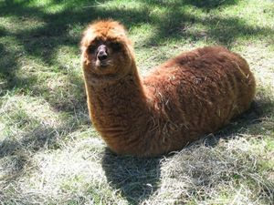

Kebab
 De: La Frikipedia, la enciclopedia extremadamente seria.
De: La Frikipedia, la enciclopedia extremadamente seria.

|
La información contenida en este artículo es una mínima parte de su jugo total, así que ponte los guantes, saca el tupperwere y empieza a exprimir el tema. Si lo haces serás recompensado con una galleta en almíbar y algo más.
|
| De la serie alimentos y otras vainas:
|
|
|
| Nombre:
|
Kebab
|
| Tipo de Comida:
|
Comida que lleva carne o semejantes
|
| ¿Como se Come?
|
Con el culo
|
| ¿De donde Proviene?
|
De morolandia
|
| Ingrediente Basico:
|
Trozo de polla irakí
|
| Forma de Presentación
|
Ensartado en un palo
|
| Sabor:
|
A mierda de moro
|
Suculenta comida árabe (mora) que algunos devoran y otros no pueden ni ver. Hay que fiarse de los coleguitas que te lo venden, ya que no parecen de fiar y mejor vigila mientras te lo preparan, ya que el cordero que rebanan podría ser carne fresca recalentada recién recogida de la valla de Ceuta.
Características
- Es imposible de cerrar, ya que siempre se desprende el condimento por los bordes pero si eres habilidoso puedes llegar a fabricar un sombrero de paja.
- Poll@ o cordero(y eso que parece bacon). Esto se lee entre 'pollo' y 'polla'.
Lo rico que está un Këbab de la Plaza de ALCÁZAR DE SAN JUAN, aunque sanidad no opine lo mismo...
Efectos secundarios
- Cuando consigas acabartelo, todo un logro, tus manos echaran pestes a kebab durante un par de dias, aunque las laves con perlán (aqui debia de haber una definicion de perlan).
- Tu aliento olerá a terrorista suicida durante 24 horas ininterrumpidas, de modo que olvidate de ligar en ese periodo de tiempo.
- Llegará un día en que esta comida te sentara como una patada en el culo y no volverás a probarla nunca más, con lo que puedes pasarte a la comida española, para favorecer el sector.
- No mezclar con bebidas alcohólicas, podría ser confundido con confeti.
- Si lo acompañas con agua potable, te dará un infarto al corazón tan grande que tu pecho se convertirá en un volcán de sangre.
- Diarrea
- Se han presentado algunos casos de Superdiarrea
Recomendaciones
 ¿Nunca te preguntaste por qué el Kebab tiene esa forma de carne alargada?, ahora que sabemos que proviene de éste camélido mustélido autóctono de
Siria ya nos queda claro por que el Kebab tiene esa forma cuando lo vemos presentado en la shawarmera.
- Si estás comiendo kebab con un turco, trata de comerlo sin poner siquiera la menor cara de reclamo, si no el turco se descontentará y creerá que estás insultando a su país y a su capacidad
culiadora culinaria, lo cual podria causar el apocalipsis (nunca has visto a un turco enojado), asi que trata de comértelo con la mejor cara posible ;-)
- Si estás comiendo kebab y sientes que tienes menguadas las capacidades olfativas, móviles, gustativas, auditivas, o alguna de toda esa maraña de cosas, tira el kebab por la ventana y sal corriendo a buscar ketchup (lo arregla todo).
- Pregúntale al proveedor de tu kebab si es carne de pollo o de polla
- Si te dice que es de polla, tócale el ano, te dara uno de carne de cerdo.
- Si te dice que es de pollo, cuando termine de hacerlo, dale una Patada en los cojones y corre con tu delicioso kebab en la mano sin pagar.
- Cuando termines de comer, lávate los dientes con la pasta dental que venía dentro del kebab (así que no me vengas con que te comiste la pasta también, eh?).
- NUNCA, repito NUNCA pidas un kebab sin cebolla,si no seras condenado por la comunidad turca y la cani(però eso da igual).
Frases con kebab
"Moro dame un kebab"
"Los moros comen cuscus??" "keba'" "entonces que comen???"
Autor(es):
- Nexo
- Cortocircuito
- Haakjvork
- Frikiman
- Trooper Kreator666
- Mad Max
- Kevrochi
- Anticowboy
- Beodo
- Gñapero Solitario
Frikipedia 2005-2016, Licencia
GFDL 1.2 - Extraído por FrikiLeaks
 Alimentos
Alimentos